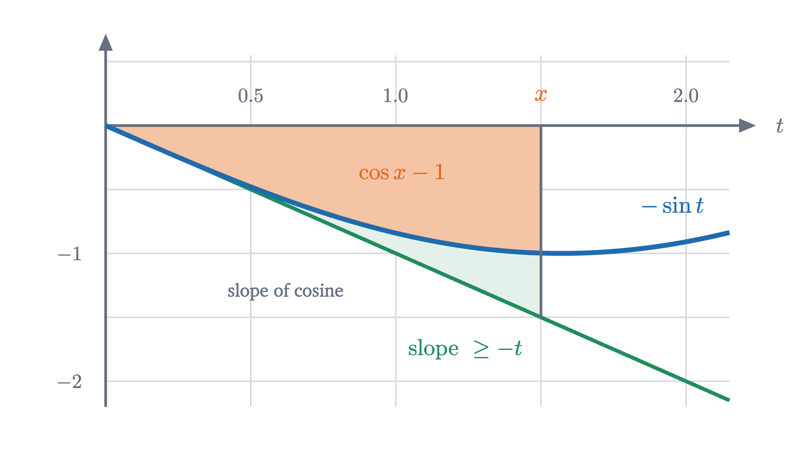
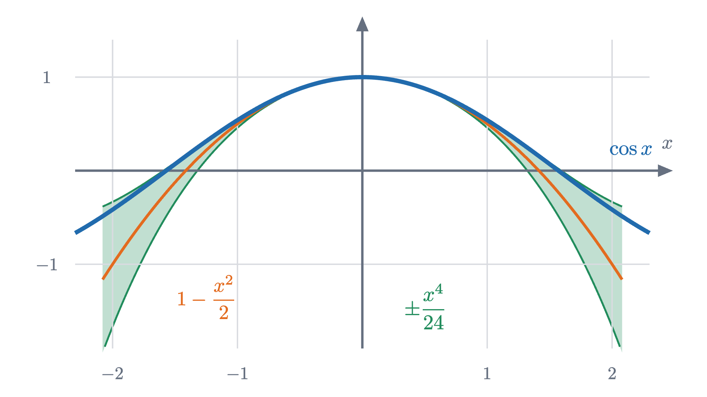
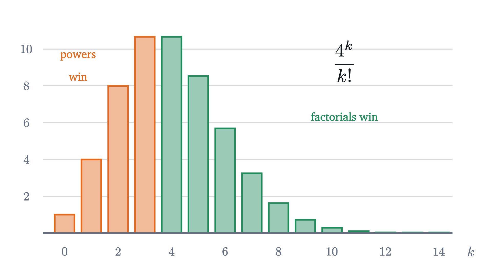
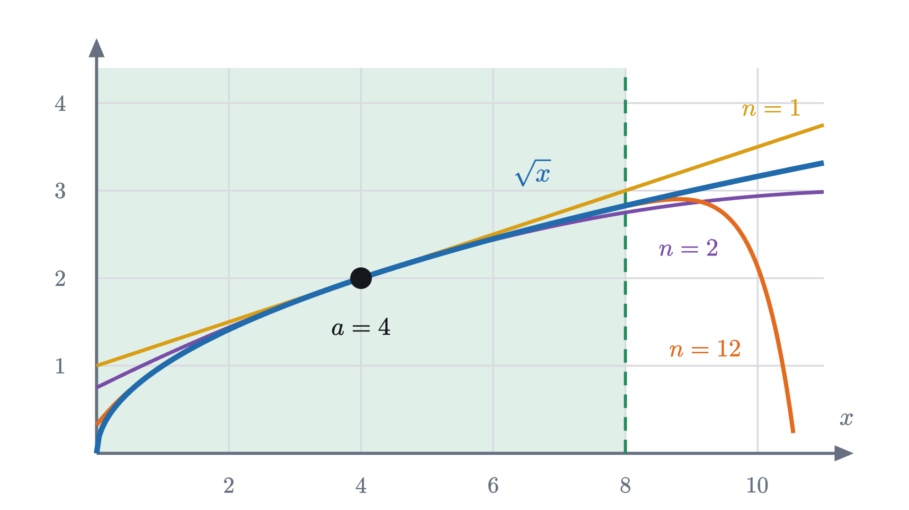

Taylor series: building functions out of polynomials
How a calculator finds cos(0.3) with only addition and multiplication, why factorials appear, how large the error can be, and where the method breaks.
AssumesWhat is a derivative? Speed at a single instantWhy the derivative of sine is cosineThe fundamental theorem of calculus, explained and proved
Type $\cos(0.3)$ into a calculator and it answers $0.955336489$ at once. Cosine is defined with a triangle or a circle: it is the horizontal coordinate of the point you reach by walking $0.3$ units around the unit circle. There is no circle inside the calculator. Its processor can add, subtract, multiply and divide, and nothing else. So how does it produce nine correct digits of a quantity that is defined by geometry?
Whatever it does must be arithmetic, and the functions that can be evaluated with arithmetic alone are polynomials. The question becomes: is there a polynomial that agrees with $\cos x$? Exactly, no. A polynomial of degree $n$ has at most $n$ roots, while cosine crosses zero infinitely often. But near $x = 0$ we might find a polynomial that is close, and then ask how close.
We will use two facts about cosine from an earlier lesson, with $x$ in radians: the derivative of $\sin x$ is $\cos x$, and the derivative of $\cos x$ is $-\sin x$.
Match the value, the slope and the bend
Start with the crudest polynomial, a constant. The best constant to imitate $\cos x$ near 0 is its value there, $\cos 0 = 1$. This says $\cos(0.3) \approx 1$, which is off by about $0.045$.
A constant ignores how the function is changing, so next allow a slope: $P(x) = c_0 + c_1 x$. The reasonable demand is that $P$ have the same value and the same slope as cosine at 0. The slope of cosine at 0 is $-\sin 0 = 0$, so $c_1 = 0$ and we have gained nothing: the tangent line at the top of the cosine curve is horizontal. What the line misses is that the curve bends downward. The slope of cosine does not stay 0; it is itself changing, and the rate at which a slope changes is the second derivative.
So allow a term that bends: $P(x) = c_0 + c_1 x + c_2 x^2$. We want three things to agree at 0: the value, the first derivative and the second derivative. For cosine these are $\cos 0 = 1$, $-\sin 0 = 0$ and $-\cos 0 = -1$. For the polynomial, $P'(x) = c_1 + 2c_2 x$ and $P''(x) = 2c_2$, so at $x = 0$ they are $c_0$, $c_1$ and $2c_2$. Matching gives $c_0 = 1$, $c_1 = 0$ and $2c_2 = -1$:
Try it on our number: $P_2(0.3) = 1 - \frac{0.09}{2} = 0.955$. The calculator said $0.955336\ldots$ Three digits are right, from a polynomial that took three lines to find.
Pause and try
Push one step further. The third derivative of cosine is $\sin x$, which is 0 at 0, and the fourth is $\cos x$, which is 1. Find $c_3$ and $c_4$ so that $P(x) = 1 - \frac{x^2}{2} + c_3x^3 + c_4x^4$ also matches the third and fourth derivatives at 0, and evaluate it at $0.3$.
Show answerHide answer
Differentiate $c_4x^4$ four times: $4c_4x^3$, then $12c_4x^2$, then $24c_4x$, then $24c_4$. The lower terms have vanished by then, and so $P''''(0) = 24c_4$, which must equal 1: $c_4 = \frac{1}{24}$. Similarly $P'''(0) = 6c_3 = 0$. So $P_4(x) = 1 - \frac{x^2}{2} + \frac{x^4}{24}$, and $P_4(0.3) = 0.955 + \frac{0.0081}{24} = 0.9553375$. The true value is $0.9553364\ldots$, so six digits are now right.
Where the factorials come from
The 2 under $x^2$ and the 24 under $x^4$ have the same origin. Differentiating $x^k$ brings down the exponent and lowers it by one, so $k$ differentiations bring down $k$, then $k - 1$, and so on to 1:
At $x = 0$, the $k$-th derivative of a polynomial $c_0 + c_1x + c_2x^2 + \cdots$ sees only the term $c_kx^k$: lower terms have been differentiated away, and higher terms still carry a factor of $x$, which is 0. So the $k$-th derivative of the polynomial at 0 is $k!\,c_k$, and to make it equal a prescribed number we must divide that number by $k!$. Nothing here depends on the point being 0, provided we write the polynomial in powers of $(x - a)$.
$P_1$ is the tangent line of the first lesson. The others continue the idea: after the slope, match the rate of change of the slope, then the rate of change of that.
For cosine the derivatives at 0 cycle through $1, 0, -1, 0$, and so
The animation at the top shows these for $n$ up to 16. Here is what they give at $x = 0.3$.
| degree $n$ | $P_n(0.3)$ | error $\cos(0.3) - P_n(0.3)$ |
|---|---|---|
| 0 | 1 | $-0.0447$ |
| 2 | 0.955 | $0.000336$ |
| 4 | 0.9553375 | $-0.00000101$ |
| 6 | 0.9553364875 | $0.0000000016$ |
Each new term buys about three more digits. That is presumably what the calculator does, or something close to it. But at this point the table is evidence only for someone who already has the answer to compare with. A method for computing $\cos(0.3)$ is not much use unless it comes with a guarantee of its own accuracy.
How wrong can it be?
Everything we know about cosine away from 0 is contained in one fact: its derivatives are $\pm\sin$ and $\pm\cos$, which never exceed 1 in size. That is a speed limit, and speed limits turn into bounds.
Begin with the slope of cosine, the function $-\sin t$. It starts at 0 when $t = 0$, and its own rate of change, $-\cos t$, is between $-1$ and $1$. A quantity that starts at 0 and changes at a rate of at most 1 cannot have moved further than $t$ after time $t$. So for $t \ge 0$ the slope of cosine lies between $-t$ and $t$.
Now cosine itself. It starts at 1 and its slope is at least $-t$, so by time $x$ it has fallen by at most the area under the line of height $t$ from 0 to $x$, which is a triangle of area $\frac{x^2}{2}$.

So $\cos x \ge 1 - \frac{x^2}{2}$, and the same reasoning with the upper line gives $\cos x \le 1 + \frac{x^2}{2}$. A bound of 1 on the second derivative became a bound of $t$ on the first derivative and then a bound of $\frac{x^2}{2}$ on the function. Each step is an integration, and each integration raises the power by one and divides by the new exponent: $1 \to t \to \frac{t^2}{2} \to \frac{t^3}{2 \cdot 3} \to \frac{t^4}{2 \cdot 3 \cdot 4}$. The factorials are back, for the same reason as before, run in reverse.
Pause and try
The fourth derivative of cosine is also at most 1 in size. Carry the chain four steps, applied to the difference between $\cos x$ and $1 - \frac{x^2}{2}$ (whose value and first three derivatives at 0 are all 0). What bound do you get for $\left|\cos(0.3) - 0.955\right|$, and how does it compare with the actual error in the table?
Show answerHide answer
The difference $g(x) = \cos x - \left(1 - \frac{x^2}{2}\right)$ has fourth derivative $\cos x$, since the polynomial’s fourth derivative is 0. Four integrations starting from $|g''''| \le 1$ give $|g'''| \le t$, $|g''| \le \frac{t^2}{2}$, $|g'| \le \frac{t^3}{6}$ and $|g(x)| \le \frac{x^4}{24}$. At $x = 0.3$ this is $\frac{0.0081}{24} = 0.0003375$. The actual error is $0.000336$. The guarantee is almost exactly attained, and we found it without knowing the answer.

Taylor’s theorem
The argument for cosine used nothing about cosine except a bound on a derivative, so it should work for any function. The general statement keeps exact track of the error and not only of its size. Recall the fundamental theorem of calculus: if $F'$ is continuous on an interval containing $a$ and $x$, then $\int_a^x F'(t)\,dt = F(x) - F(a)$. This holds for $x < a$ as well, under the convention that an integral with its limits written backwards is the negative of the integral with them in order.
The hypotheses are what the cosine argument needed: enough derivatives to form $P_n$, and one more, $f^{(n+1)}$, to control what $P_n$ leaves out. $M$ is the speed limit. The power $|x - a|^{n+1}$ and the factorial are the result of integrating $n + 1$ times.
The induction step is the cosine argument in general form: each pass peels one more term off the remainder and leaves an integral with one more power of $(x - t)$ and one more derivative of $f$. The proof keeps every step an equation by carrying the exact integral along, and takes absolute values only at the end, so it also yields a formula for the error and not only a bound.
What convergence means
The theorem measures the error of one polynomial. The table suggested more: that by raising the degree we can get as close to $\cos(0.3)$ as we like.
An infinite sum is by definition a limit of finite sums, so the sentence “$\cos x = 1 - \frac{x^2}{2!} + \frac{x^4}{4!} - \cdots$” is a claim about a limit, to be proved separately for each $x$. The claim has two parts that can fail independently: that the numbers $P_n(x)$ approach something, and that the something is $f(x)$.
That $e^x$ is its own derivative is the property that singles out the number $e$ among bases; we are quoting it, not proving it here.
The last step of the proof deserves a picture, because for large $x$ the terms of the series first grow.

A power $x^k$ gains the same factor $x$ at each step, while $k!$ gains a factor $k$ that keeps growing. Sooner or later the factorial wins, whatever $x$ is. So for these three functions a calculator can reach any accuracy at any $x$ by taking enough terms, though for large $x$ it may need many.
Where it fails
The proof for $\cos$, $\sin$ and $e^x$ leaned on one thing: a bound $M$ on the derivatives that does not grow with $n$. Here is a function without one. Let
By the chain rule its derivatives are $f'(x) = \frac{1}{(1-x)^2}$, $f''(x) = \frac{2}{(1-x)^3}$, and in general $f^{(k)}(x) = \frac{k!}{(1-x)^{k+1}}$. At 0 the $k$-th derivative is $k!$, which the $k!$ in the Taylor coefficient cancels. The Taylor series about 0 is
Pause and try
Compute the Taylor polynomials $P_0, P_1, P_2, P_3, P_4$ of $\frac{1}{1-x}$ at $x = \frac12$, where the function equals 2, and at $x = 2$, where it equals $-1$. What happens in each case?
Show answerHide answer
At $x = \frac12$: $1,\ 1.5,\ 1.75,\ 1.875,\ 1.9375$. Each term halves the remaining distance to 2. At $x = 2$: $1,\ 3,\ 7,\ 15,\ 31$. The values run away from $-1$ and do not approach anything. More terms make the approximation worse.
For this function we do not need the integral to find the remainder. Multiplying out, $(1 - x)(1 + x + \cdots + x^n) = 1 - x^{n+1}$, so for $x \ne 1$
This is $R_n(x)$ exactly. It tends to 0 when $|x| < 1$, and when $|x| \ge 1$ it does not, because $|x|^{n+1}$ does not shrink. So the series converges to $f(x)$ on the interval $-1 < x < 1$ and nowhere else.
The barrier on the right is understandable: $f$ has no value at $x = 1$, and its graph runs off to infinity there. The barrier on the left is the surprising one. At $x = -1$ the function is perfectly well behaved, $f(-1) = \frac12$, yet the series gives $1 - 1 + 1 - 1 + \cdots$, whose partial sums alternate between 1 and 0 forever. A series in powers of $x$ cannot tell $x$ from $-x$ as far as size is concerned: its terms have size $|x|^k$ either way. The trouble at distance 1 on one side shuts the series down at distance 1 on every side.
That behavior is general. It is a theorem of analysis, which we state without proof, that every series $\sum c_k(x-a)^k$ has a radius of convergence $R$ (possibly 0 or infinite): it converges when $|x - a| < R$ and diverges when $|x - a| > R$. For $\cos$, $\sin$ and $e^x$ about any point, $R$ is infinite. For $\frac{1}{1-x}$ about 0, $R = 1$.
Taylor’s theorem has not failed here. It is still true for every $n$ and every $x < 1$. What fails is the bound’s usefulness: on the interval from 0 to $x$ the derivative $f^{(n+1)}(t) = \frac{(n+1)!}{(1-t)^{n+2}}$ has a maximum $M$ of at least $(n+1)!$, its value at $t = 0$. The factorial in the bound, which was supposed to beat the power, is cancelled, and what is left is at least $|x|^{n+1}$.
There is a second way to fail, and it is stranger. The function defined by $f(x) = e^{-1/x^2}$ for $x \ne 0$ and $f(0) = 0$ has derivatives of all orders at 0, and every one of them equals 0 (an example that goes back to Cauchy in the 1820s; the verification is a standard exercise). Its Taylor series about 0 is $0 + 0 + 0 + \cdots$, which converges for every $x$, to 0. But $f(x) > 0$ for $x \ne 0$. The series converges, and to the wrong function. Matching every derivative at one point does not by itself pin a function down; an estimate of the remainder is what does.
Worked examples

Check yourself
The degree-2 Taylor polynomial of $\cos x$ about 0 is used to estimate $\cos(0.1)$. Which statement is correct?
Looking back, finding the polynomials took one differentiation per coefficient. The hard part was knowing how far to trust them, and the answer came from turning a bound on the next derivative into a bound on the error by repeated integration. That idea, a local description plus a controlled remainder, is how most functions are computed in practice and how most approximations in physics are justified.
Problems
The first three repeat the lesson’s computations, the next four ask you to combine them with a bound or an argument, and the last one reaches a famous series.
Problem 1
Use the degree-3 Taylor polynomial of $\sin x$ about 0 to estimate $\sin(0.2)$, and bound the error. (Notice that $P_3 = P_4$.)
Show solutionHide solution
$P_3(x) = x - \frac{x^3}{6}$, so $P_3(0.2) = 0.2 - \frac{0.008}{6} = 0.198667$ to six places. The $x^4$ coefficient of sine is 0, so this is also $P_4(0.2)$, and the theorem with $n = 4$, $M = 1$ gives $|R_4| \le \frac{0.2^5}{5!} = \frac{0.00032}{120} \approx 0.0000027$. (The true value is $0.1986693$.)
Problem 2
Write down the degree-4 Taylor polynomial of $e^x$ about 0, use it to estimate $e^{0.1}$, and bound the error, using $e^{0.1} < 3$.
Show solutionHide solution
$P_4(x) = 1 + x + \frac{x^2}{2} + \frac{x^3}{6} + \frac{x^4}{24}$. At $0.1$: $1 + 0.1 + 0.005 + 0.000166667 + 0.000004167 = 1.105170833$. The fifth derivative $e^t$ is at most $e^{0.1} < 3$ on $[0, 0.1]$, so $|R_4| \le \frac{3 \times 0.1^5}{5!} = \frac{0.00003}{120} = 2.5 \times 10^{-7}$. (The true value is $1.105170918$, an error of about $8.5 \times 10^{-8}$.)
Problem 3
Find the Taylor polynomial of every degree for $f(x) = x^3$ about $a = 1$. What is the remainder $R_3$?
Show solutionHide solution
$f(1) = 1$, $f'(x) = 3x^2$ so $f'(1) = 3$, $f''(x) = 6x$ so $f''(1) = 6$, $f'''(x) = 6$, and all later derivatives are 0. So $P_0 = 1$, $P_1 = 1 + 3(x-1)$, $P_2 = 1 + 3(x-1) + 3(x-1)^2$, and $P_n = 1 + 3(x-1) + 3(x-1)^2 + (x-1)^3$ for every $n \ge 3$. Since $f^{(4)} = 0$, the integral form gives $R_3(x) = 0$: the polynomial $P_3$ equals $x^3$ exactly. Expanding confirms it: with $u = x - 1$, $(1 + u)^3 = 1 + 3u + 3u^2 + u^3$. A Taylor polynomial of a polynomial is the same polynomial rewritten in powers of $(x - a)$.
Problem 4
Find the Taylor series of $f(x) = \frac{1}{x}$ about $a = 1$. For which $x$ does it converge to $\frac1x$? Explain the answer in terms of the graph.
Show solutionHide solution
$f'(x) = -x^{-2}$, $f''(x) = 2x^{-3}$, $f'''(x) = -6x^{-4}$, and in general $f^{(k)}(x) = (-1)^k k!\,x^{-(k+1)}$, so $\frac{f^{(k)}(1)}{k!} = (-1)^k$. The series is $\sum (-1)^k (x-1)^k = 1 - (x-1) + (x-1)^2 - \cdots$. Put $u = 1 - x$: this is $1 + u + u^2 + \cdots$, and $\frac1x = \frac{1}{1 - u}$. By the lesson’s computation the remainder is $\frac{u^{n+1}}{1-u}$, which tends to 0 exactly when $|u| < 1$, that is, $0 < x < 2$. The radius of convergence is 1, the distance from the center $a = 1$ to the point $x = 0$ where $\frac1x$ has no value. The series stops at $x = 2$ as well, where the function is harmless, for the same reason as in the lesson.
Problem 5
How many nonzero terms of the cosine series guarantee $\cos(1)$ to within $10^{-8}$?
Show solutionHide solution
With $M = 1$ and $x = 1$, $|R_n(1)| \le \frac{1}{(n+1)!}$. We need $(n+1)! \ge 10^8$. Since $11! = 39{,}916{,}800$ and $12! = 479{,}001{,}600$, we need $n + 1 = 12$, so $n = 11$. Because cosine has no odd powers, $P_{11} = P_{10}$, which has the six nonzero terms $1 - \frac{1}{2!} + \frac{1}{4!} - \frac{1}{6!} + \frac{1}{8!} - \frac{1}{10!} = 0.5403023038$. (The true value is $0.5403023059$, and the error $2.1 \times 10^{-9}$ equals the bound $\frac{1}{12!}$ to two digits.)
Problem 6
Use the integral form of the remainder with $n = 1$ to prove that $\cos x \ge 1 - \frac{x^2}{2}$ for every real $x$.
Show solutionHide solution
With $f = \cos$, $a = 0$, $n = 1$: $P_1(x) = 1$ and $f'' = -\cos$, so $\cos x = 1 + \int_0^x (x - t)(-\cos t)\,dt$. Suppose $x \ge 0$. For $t$ in $[0, x]$ we have $x - t \ge 0$ and $-\cos t \ge -1$, so the integrand is at least $-(x - t)$, and
For $x < 0$, use that both sides are unchanged when $x$ is replaced by $-x$: $\cos(-x) = \cos x$ and $(-x)^2 = x^2$. So the inequality for $-x > 0$ is the inequality for $x$.
Problem 7
Use Taylor’s theorem to show that $\left|\frac{\sin x}{x} - 1\right| \le \frac{x^2}{6}$ for all $x \ne 0$, and deduce $\lim_{x \to 0} \frac{\sin x}{x} = 1$.
Show solutionHide solution
For sine about 0, $P_1(x) = x$ and the $x^2$ coefficient is 0, so $P_2(x) = x$ too. The theorem with $n = 2$ and $M = 1$ (the third derivative is $-\cos$) gives $|\sin x - x| \le \frac{|x|^3}{6}$. Dividing by $|x| > 0$: $\left|\frac{\sin x}{x} - 1\right| \le \frac{x^2}{6}$. Given $\varepsilon > 0$, take $\delta = \sqrt{6\varepsilon}$; then $0 < |x| < \delta$ implies $\frac{x^2}{6} < \varepsilon$. This is the $\varepsilon$–$\delta$ definition of the limit. (There is no circularity as long as the derivative of sine was obtained geometrically, as in the lesson on the derivative of sine.)
Problem 8
The derivative of $\arctan x$ is $\frac{1}{1 + x^2}$, and $\arctan 1 = \frac{\pi}{4}$. (a) Replace $x$ by $-t^2$ in the identity $\frac{1}{1-x} = 1 + x + \cdots + x^n + \frac{x^{n+1}}{1-x}$. (b) Integrate the result from 0 to 1 and show that the last term contributes at most $\frac{1}{2n+3}$ in size. (c) Conclude that $\frac{\pi}{4} = 1 - \frac13 + \frac15 - \frac17 + \cdots$.
Show solutionHide solution
(a) $\frac{1}{1 + t^2} = 1 - t^2 + t^4 - \cdots + (-1)^n t^{2n} + \frac{(-1)^{n+1} t^{2n+2}}{1 + t^2}$, valid for every real $t$ since $-t^2 \ne 1$.
(b) By the fundamental theorem, $\int_0^1 \frac{dt}{1+t^2} = \arctan 1 - \arctan 0 = \frac{\pi}{4}$, and $\int_0^1 t^{2k}\,dt = \frac{1}{2k+1}$. So
Since $0 \le \frac{t^{2n+2}}{1 + t^2} \le t^{2n+2}$ on $[0, 1]$, we get $|E_n| \le \int_0^1 t^{2n+2}\,dt = \frac{1}{2n+3}$.
(c) $\frac{1}{2n+3} \to 0$, so the partial sums converge to $\frac{\pi}{4}$. Notice where we are: the series $1 - t^2 + t^4 - \cdots$ has radius of convergence 1, and $t = 1$ is on the edge, where the series itself reads $1 - 1 + 1 - \cdots$ and diverges. We never used the infinite series at $t = 1$. We used a finite sum with an exact remainder and bounded the remainder after integrating, which is the method of this whole lesson. The convergence is slow, with an error of order $\frac1n$, so a thousand terms give about three digits of $\pi$.